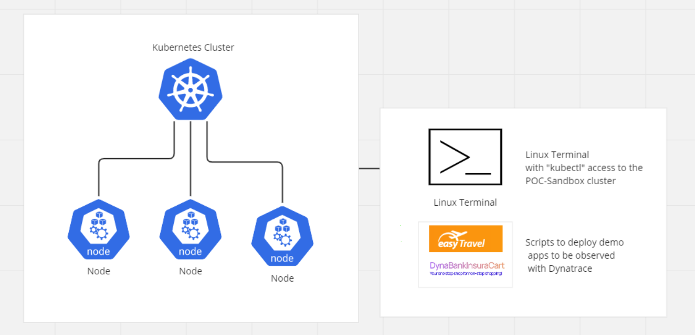
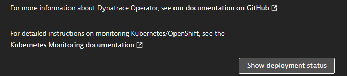
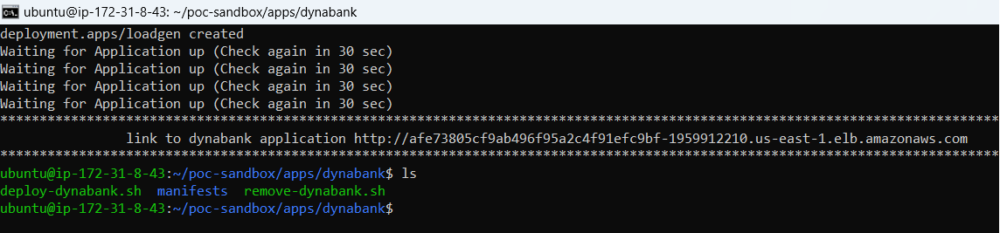
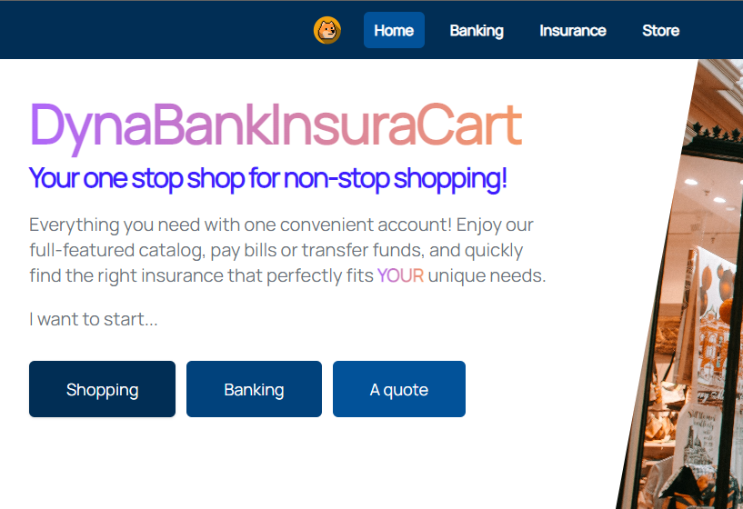
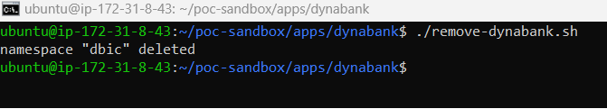
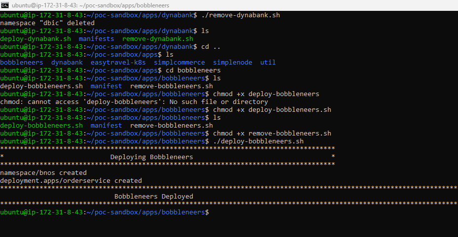
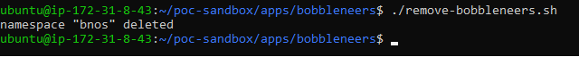
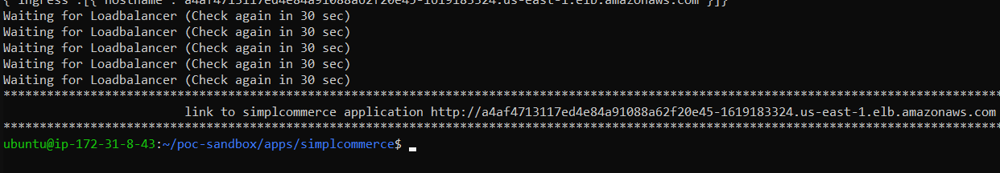
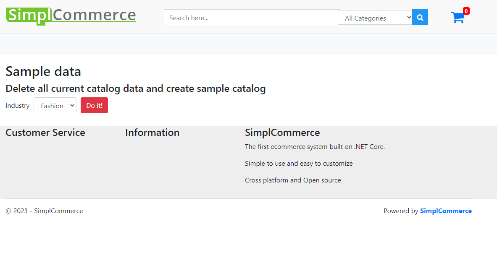

Welcome to the Dynatrace POC-Sandbox. The POC-Sandbox is a hands on environment meant to demonstrate the ease of use of the Dynatrace Platform. The POC-Sandbox infrastructure consists of
 |
- a Kubernetes Cluster with 3 Nodes
- a Linux Shell Instance that can connect to the cluster and perform kubectl commands
- The Shell Instance also contains Example apps that can be deployed to the cluster
- This codelab will take you through connecting to the shell instance, the cluster, connect the cluster to Dynatrace and Deploy Example Applications
Download the key-pair file that is attached to the Sandbox creation completion email
|

Save the keyfile to a folder of your choice
|

Copy the ssh command from the Sandbox creation completion email
|

Open a Command Line prompt and access the directory where the key was downloaded to
Paste the ssh command from the Sandbox creation completion email
C:\Users\user\Downloads> ssh -i {yourpemkeyname}.pem ubuntu@{yourinstancedns}.com
You have successfully connected to the shell instance with access to your POC-Sanbdox Cluster
|

Copy the 2nd command from the Sandbox creation completion email
Paste the second command into your shell instance
aws eks --region us-east-1 update-kubeconfig --name {your-tenant-id}-sandbox
Test if the connection was successful with the following command
kubectl get namespaces
Your output should look like this
NAME STATUS AGE
default Active 5h8m
kube-node-lease Active 5h8m
kube-public Active 5h8m
kube-system Active 5h8m
In the Dynatrace UI Navigate to Deploy Agent -> Kubernetes
|

Provide a name, click the 2 "Create Token" buttons, click the Download dynakube.yaml button
|

Copy the content of the downloaded dynakube.yaml
Go back to the Shell Instance, create a new file with the name dynakube.yaml
nano dynakube.yaml
Copy the content of the downloaded dynakube.yaml into the newly created dynakube.yaml in the shell instance and save the file
|

Copy the command section from the Install Dynatrace overview
|

Paste and execute the copied commands into the shell instance
kubectl create namespace dynatrace
kubectl apply -f https://github.com/Dynatrace/dynatrace-operator/releases/download/v0.11.1/kubernetes.yaml
kubectl -n dynatrace wait pod --for=condition=ready --selector=app.kubernetes.io/name=dynatrace-operator,app.kubernetes.io/component=webhook --timeout=300s
kubectl apply -f dynakube.yaml
You should get the following output in the shell instance
|

Click on "Show deployment Status" in the Install Kubernetes overview in Dynatrace
 |
The Agents will be displayed as soon as they make a connection
In the shell instance cd into the directory
cd /home/ubuntu/poc-sandbox/apps/dynabank
Run the script deploy_dynabank.sh and wait until the script has completed
~/poc-sandbox/apps/dynabank$ ./deploy-dynabank.sh
When the script has completed it will output the loadbalancer url
 |
Copy the Loadbalancer url and paste it into your browser
 |
you have successfully deployed the dynabank app
Dynabank use cases and How to Links:
Dynabank Workshop
Dynabank Full Stack front to Back
to remove the dynabank app and loadbalancer execute the remove-dynabank.sh
~/poc-sandbox/apps/dynabank$ ./remove-dynabank.sh
this is the expected output after removal of the dynabank application
 |
In the shell instance cd into the directory
cd /home/ubuntu/poc-sandbox/apps/bobbleneers
Run the file deploy_bobbleneers.sh and wait until the script has completed
~/poc-sandbox/apps/bobbleneers$ ./deploy-bobbleneers.sh
When the script has completed it will output the following
 |
you have successfully deployed the bobbleneers app
Bobbleneers use cases and How to Links:
Bobbleneers Workshop
Bobbleneers App
to remove the Bobbleneers app and loadbalancer run remove-bobbleneers.sh
~/poc-sandbox/apps/bobbleneers$ ./remove-bobbleneers.sh
this is the expected output after removal of the bobbleneers application
 |
In the shell instance cd into the easytravel-k8s directory
cd /home/ubuntu/poc-sandbox/apps/easytravel-k8s
Run the script deploy_easytravel.sh and wait until the script has completed
~/poc-sandbox/apps/easytravel-k8s$ ./deploy-easytravel.sh
When the script has completed it will output the url the loadbalancer
|

Copy the loadbalancer url and paste it into your browser
|

you have successfully deployed the easytravel app
to remove the easytravel app run remove-easytravel.sh
~/poc-sandbox/apps/easytravel-k8s$ ./remove-easytravel.sh
this is the expected output after removal of the easytravel application
|

In the shell instance cd into the directory
cd /home/ubuntu/poc-sandbox/apps/simplcommerce
Run the script deploy_simplcommerce.sh and wait until the script has completed
~/poc-sandbox/apps/simplcommerce$ ./deploy-simplcommerce.sh
When the script has completed it will output the loadbalancer url
 |
Copy the Loadbalancer url and paste it into your browser
 |
you have successfully deployed the simplcommerce app
to remove the simplcommerce app and loadbalancer run remove-simplcommerce.sh
~/poc-sandbox/apps/simplcommerce$ ./remove-simplcommerce.sh